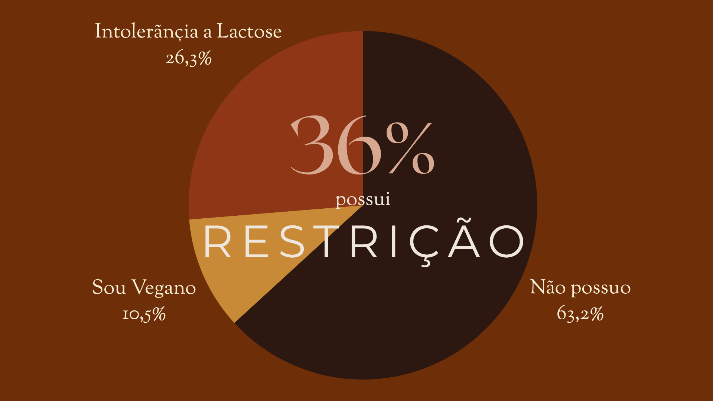
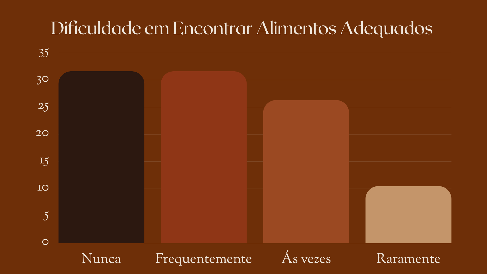
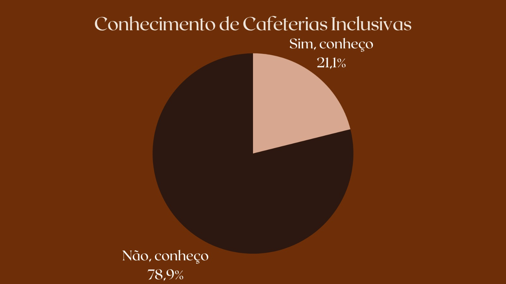

Na Incoffee, acreditamos que um bom café, vai muito além de uma bebida. Ele cria momentos e aproxima pessoas, transformando pequenos instantes em grandes lembranças. Por isso, nossa missão é oferecer um ambiente acolhedor, moderno e confortável, onde cada cliente se sinta bem-vindo desde a primeira visita.
Valorizamos a qualidade em cada detalhe, desde a seleção dos melhores grãos até o preparo cuidadoso de cada xícara. Além dos cafés especiais, contamos com um cardápio variado de bebidas, doces e salgados preparados para agradar todos os paladares.
O sabor deve ser acessível a todos. Por isso, oferecemos opções sem glúten, sem lactose, sem açúcar e alternativas veganas, garantindo que pessoas com diferentes necessidades alimentares possam desfrutar de uma experiência completa, sem abrir mão do prazer de um excelente café.
Valorizamos a sustentabilidade e o respeito ao meio ambiente. Sempre que possível, buscamos utilizar produtos de qualidade, reduzir desperdícios e incentivar práticas conscientes em nosso dia a dia. Acreditamos que pequenas atitudes fazem a diferença e contribuem para um futuro melhor.
Nosso compromisso é evoluir constantemente, trazendo novidades ao nosso cardápio e aprimorando nossos serviços para oferecer a melhor experiência aos nossos clientes. Cada visita é uma oportunidade de criar momentos especiais, tornando a Incoffee um lugar onde o aroma do café, o bom atendimento e o conforto se encontram.
Aproximando pessoas e quebrando barreiras: o crescimento da InCoffe é o reflexo de um espaço feito para todos.


Na Incoffee, acreditamos que uma xícara de café vai muito além do grão. Ela é o ponto de encontro de histórias, ideias e momentos únicos. Nossa atuação é guiada por pilares que transformam cada visita em uma experiência acolhedora.
Dizemos que o nosso café é para todos, e levamos isso ao pé da letra. Desde a arquitetura sem barreiras até um cardápio pensado para atender a diferentes necessidades e escolhas alimentares, garantimos que todos se sintam bem-vindos e respeitados em nosso espaço.
Trabalhamos com grãos selecionados, processos cuidadosos e baristas apaixonados pelo que fazem. Da torra perfeita ao último detalhe do latte art, buscamos entregar sempre o melhor sabor e padrão de qualidade.
A InCoffe nasceu para ser um ponto de pausa no dia a dia. Seja para trabalhar no mezanino, encontrar amigos na mesa comunitária ou ter um momento a sós, criamos um ambiente seguro, quentinho e confortável como um abraço.
Valorizamos a origem dos nossos grãos, o respeito com nossos parceiros e o relacionamento aberto com a nossa comunidade. Construímos laços reais com quem passa pela nossa porta e visita o nosso site todos os dias.
